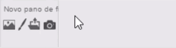

Adicione efeitos e movimento
Apresentamos aqui mais algumas ideias para dar vida a suas coisas favoritas.
Adicionar efeitos
Faça um ator mudar de cor quando ele for clicado.
Animando
Se seu ator tem mais de uma fantasia, você pode animá-lo trocando suas fantasias.
Adicione um script como esse:
Selecione fantasias usando o menu do bloco trocar fantasia.
Para ver as fantasias, clique na guiaFantasias.

Quer adicionar uma fantasia? Clique em uma fantasia com a ferramenta Duplicar.
Agora você pode fazer a animação trocando as fantasias (como no script acima).
Deslizando
Faça um ator deslizar quando você clicar nele:
Adicione um pano de fundo
Clique no ícone para abrir a biblioteca de panos de fundo:

Então, escolha o pano de fundo que você quer.
Quando terminar, você pode compartilhar suas coisas favoritas. Compartilhe seu projeto